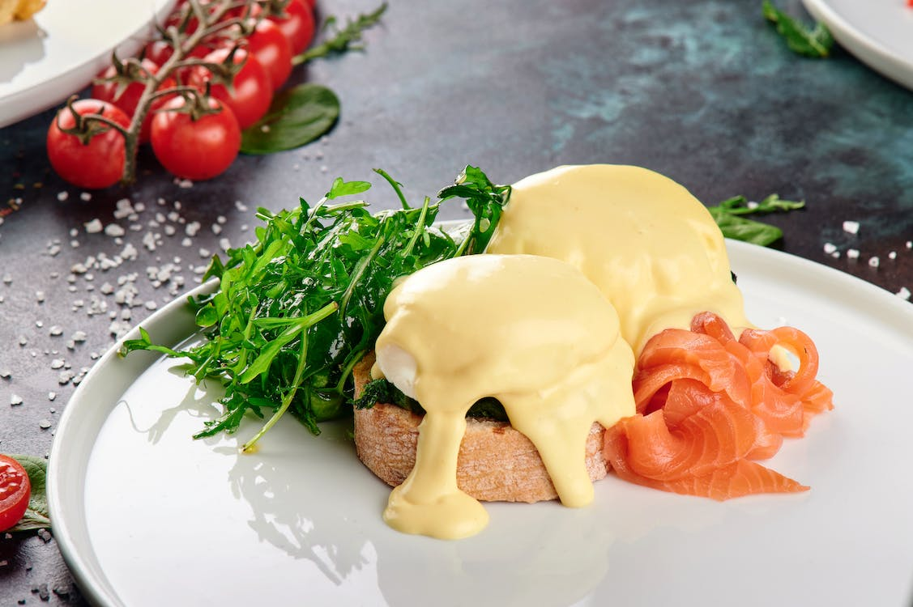

An English muffin topped with bacon, poached eggs and a deliciously buttery Hollandaise sauce, you can
easily tell why this is this is such a popular American breakfast!

Ingredients:
1 English Muffin
6 Pieces Smoked Streaky Bacon
2 Eggs
1tbsp Vinegar
For Hollandaise:
60g Real Butter
2 Egg Yolks
1/2tsp Vinegar
Pinch of Cayenne
Method:
Fill kettle (or saucepan) with water and start to boil. Preheat oven to 200°C (or 392°F).
Melt the butter in a saucepan. While it's melting, put the bacon in the oven and whisk the egg
yolks, 1/2tsp vinegar and cayenne in a mixing bowl.
When the butter has melted, transfer into a small jug, wash the saucepan and half fill with the
boiling water (This step is only necessary if you used a kettle to boil the water)
Put the saucepan back on the cooker on a how heat. Add the 1tbsp vinegar
To poach the eggs, wait until the water is at a light simmer, then stir the water until there is a
small whirlpool. Then crack the eggs close to the center of the whirlpool.
Slice the English muffin down the middle, and toast in the oven.
Place the large bowl over the boiling water. Whisk the egg yolk mix constantly, while slowly adding
the melted butter. After all the butter is added, keep whisking until sauce is thick.
When everything is cooked to your liking, assemble as follows: muffin, bacon, poached eggs, sauce